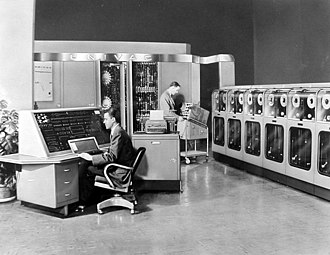
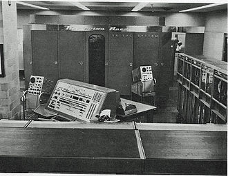
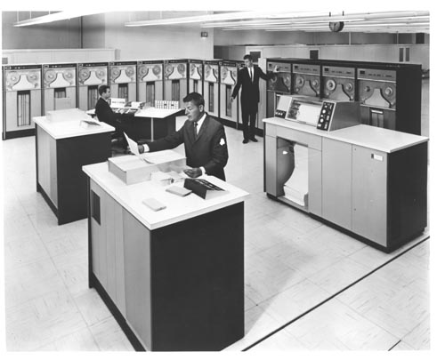
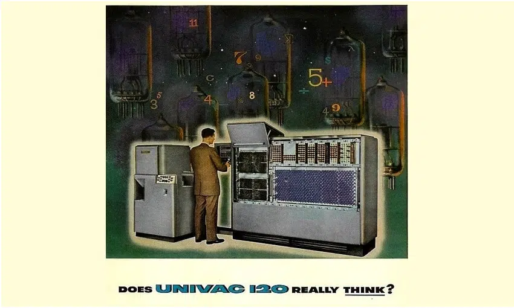
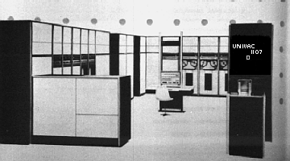

Fabricante
UNIVAC foi fabricado pelo grupo Remington Rand
Preço
Projetado para custar US$ 159.000 o UNIVAC I foi vendido por um preço entre US$ 1.250.000 e US$ 1.500.000. No total, 46 unidades deste primeiro modelo foram fabricadas.
Modelos
|  |
|
|  |
|
|  |
|
|  | Univac 120 |
|  | Univac 1107 |
Videos e Documentos sobre a UNIVAC
Íntegra do original do Manual de Manutenção do UNIVAC I, que mostra em detalhes todos os seus componentes internos
Vídeo institucional apresentado o UNIVAC I
Comercial do UNIVAC de 1956
Do ENIAC ao UNIVAC (Documentário)
Elementos principais do UNIVAC
Componentes eletrônicos do UNIVAC
Origem e História Univac III

Beatriz Pultrini 2023 - ©Todos os direitos reservados
Trabalho Acadêmico - Sem fins Lucrativos